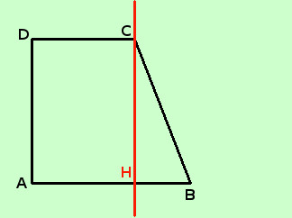
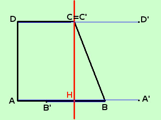
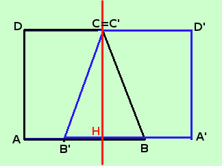
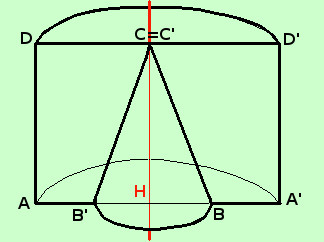

Come si disegna un solido di rotazione
Asse di rotazione passante per l'interno del poligono
Intanto, se l'asse di rotazione e' interno al poligono, non puoi fare una rotazione completa, ma solamente una rotazione di 180°, quindi, prima di fare la figura rileggi attentamente il testo del problema
Comunque, per disegnare un solido di rotazione, avendo un poligono e un asse di rotazione interno puoi seguire gli stessi punti che ho fissato nella pagina precedente: il procediemnto e' identico, solamente, se vuoi che la figura ti sia facilitata, ti conviene disegnare con un colore diverso la figura simmetrica, cosi' puoi distinguere meglio i lati delle due figure.
Un'ultima cosa: invece di tracciare una circonferenza fra i punti corrispondenti devi tracciare una semicirconferenza schiacciata con la concavita' messa opportunamente; un esempio ti chiarira' meglio il concetto
Prendiamo una figura semplice tipo un trapezio rettangolo
Considero il trapezio rettangolo ABCD retto in A e D. Considerare il solido ottenuto da una rotazione di 180° del trapezio attorno ad un asse coincidente con l'altezza CH del trapezio stesso
-
Disegno il trapezio e l'asse di rotazione (in rosso)

-
Ora da ogni vertice mando la perpendicolare sull'asse di rotazione e prolungo tale perpendicolare dall'altra parte in modo da avere segmenti uguali da una parte e dall'altra dell'asse di rotazione.
per mostrartelo meglio sposto leggermente i segmenti blu in modo da evidenziarteli Chiamo il punto alla fine del segmento di perpendicolare con lo stesso nome ma con un apice
Il punto C essendo sull'asse di rotazione, coincide con il punto corrispondente C'

- Congiungo fra loro i punti in modo da costruire la figura simmetrica rispetto all'asse di rotazione utilizzando un colore blu per mostrartelo meglio (e metto i lati BC e B'C' vicini ma non sovrapposti come dovrebbero essere).
Siccome A e' collegato con B e con D congiungo A' con con B' e con D' eccetera..

- Adesso metto delle semicirconferenze schiacciate per dare l'idea della visione prospettica
Attenzione: le semicirconferenze tipo AA', cioe' da sinistra a destra le faccio concave verso il basso, mente le circonferenze tipo BB' cioe' da destra a sinistra le faccio concave verso l'alto
siccome non serve piu' evidenziare i due trapezi faccio tutte le linee nere

Intuitivamente possiamo dire che la figura che ottengo e' data da un semicilindro AH'A'D'CDcui e' appiccicato un semicono CB'B
|